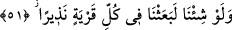

Su da ateş de senindir ey Allahım
Sen dilersen ateş tatlı su kesilir
Dilemezsen su da ateş kesilir
Şu bizdeki istek de senin var edişindendir
Ey Rabbim, zulümden kurtulmak senin bağışındır
Bize bu isteği biz istemeden verdin
İhsan hazineni herkese açtın
51. (Rasûlüm!) Şâyet dileseydik, elbet her ülkeye bir uyarıcı (peygamber)
gönderirdik.
“Şâyet dileseydik,” isteseydik “elbet her ülkeye” her memlekete ve şehre, insanların
toplandığı yere halkını uyaran “bir uyarıcı” peygamber “gönderirdik.” Böylece senin
de peygamberlik yükün hafiflerdi. Ancak biz seni bütün şehirlere ve memleketlere rasûl
olarak gönderdik. Senin şânını yüceltmek, ecrini kat kat vermek ve diğer peygamberlere
seni üstün kılmak için işi sana hasrettik. Senin mekânının ulu ve yüce olması sebebiyle
peygamberliği seninle tamamladık ve seni kıyâmete dek gelecek insanlara gönderdik.
Râğıb der ki: “__WORD__ bir şeyi iletmek ve yönlendirmektir.”
“__WORD__ insanların toplandığı yerin adıdır. “__WORD__ bir şeyi korkutarak haber vermektir.
et-Te’vîlâtü’n-Necmiyye’de der ki: “Âyet, Allah’ın kudret ve hikmetinin kemâline,
Hz. Peygamber (s.a.)’in izzet ve şerefine, Allah’ın seçkin kullarını (havâssı) te’dîbe
işâret etmektedir.
Allah’ın kudretine gelince, O her istediğini yapmaya kadir olduğunu ortaya koymuştur.
Yoksa felsefecilerin ve tabiatçıların iddiâ ettikleri gibi peygamberlerin ortaya çıkışı
sadece yakın ilişkilere ve bağlantılara bağlı değildir. Bilakis nasıl ve ne zaman dilerse
Allah’ın kudretine göredir.
Rasûlullah (s.a.)’in izzet ve şerefine gelince; O, kendi zamanında peygamberlikte tek
oluşu, bütün peygamberlerden üstün olmanın O’na tahsis edilmesi, bütün insanlara
gönderilmesi, O’nun şerîatı ile önceki şerîatların nesh edilmesi, peygamberliğin
O’nunla son bulması, kitabının nesh, değiştirme ve tahriften korunması, getirdiği dînin
kıyâmete kadar devam etmesidir.
Havâssın te’dibine gelince; “Şâyet dileseydik, elbet her ülkeye/şehre bir uyarıcı
(peygamber) gönderirdik.” âyetinde Hz. Peygamber (a.s.)’a en ince işâretle bir tür
te’dib vardır. Nitekim başka bir âyette “Hakikaten, biz dilersek sana vahyettiğimizi
ortadan kaldırırız” (el-İsrâ, 17/86) buyrulmuştur. Maksad kullarının havâssının bu
edebi kazanmaları, amellerini görmekten ve onlarla ucbe düşmekten korunmuş
olmalarıdır. Yâni Yüce Allah, dostlarını ve seçkin kullarını dâimâ masum tutmak ister.
Çünkü onlara iltifâtı vardır veya Hakk’ın kendilerine ne tür lütuf ve ihsanlarda